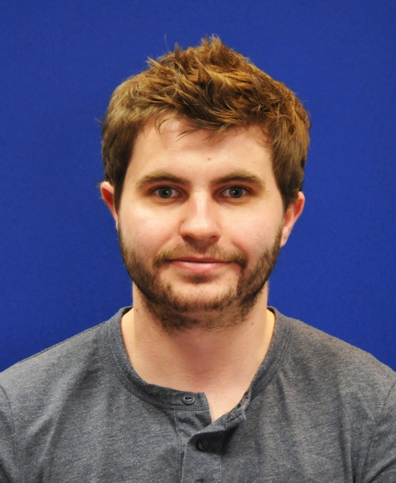

About me
Since February 2020, I have been an Assistant Professor of Computer Science at the University of Nottingham where
I am a member of the Cyber-physical Health and Assistive Robotics Technologies Lab (CHART) and the Mixed Reality Lab (MRL).
My main research skills are in the areas of machine learning, model deployment and experimental design.
Research
Throughout my time as an academic, I have worked in a multi-disciplinary environment between the schools of computer science,
medicine, biology, and electronics at various institutions including the University of York, the Norwegian University of Science
and Technology, and currently at the University of Nottingham. My Google Scholar profile can be found here.
At present, my research can be divided into two key themes:
- The development of new technologies to improve the diagnosis time and treatment of movement disorders, particularly focusing on gait and ambulation in children. To do this, I use a combination of movement sensors, visual recordings alongside pose estimation techniques all wrapped up in machine learning.
- I am also working on the application of bio-inspired and evolutionary algorithms to understand the adaptation of biological species and the overlap between in silico and in biological systems.
Recently Published Work
Here are some of the recent papers which I have been happy to get published
- The Classification of Movement in Infants for the Autonomous Monitoring of Neurological Development A Turner, S Hayes, D Sharkey, 2023, MDPI Sensors 23 (10).
- A Fitness Landscape Analysis Approach for Reinforcement Learning in the Control of the Coupled Inverted Pendulum Task F Neri, A Turner, 2023 Applications of Evolutionary Computation: 26th European Conference …
- The Classification of Multiple Interacting Gait Abnormalities Using Insole Sensors and Machine Learning, A Turner, D Scott, S Hayes 2022 IEEE International Conference on Digital Health (ICDH), 69-76.
- Environmental temperatures shape thermal physiology as well as diversification and genome-wide substitution rates in lizards J Garcia-Porta, I Irisarri, M Kirchner, A Rodríguez, S Kirchhof, KC Wollenberg Valero, 2019, Nature communications 10 (1), 4077.
- The classification of minor gait alterations using wearable sensors and deep learning A Turner, S Hayes IEEE Transactions on Biomedical Engineering, 2019, 66 (11), 3136-3145.